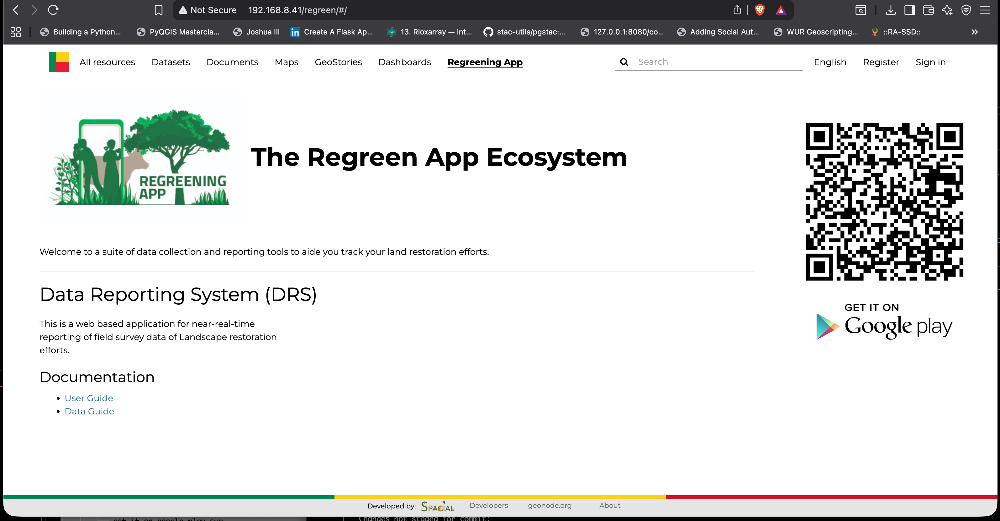

Regreen App Ecosystem
BCGeo players were interested in using the regreening suite of data collection and reporting tools.
This need created a requirement to have new tab in the navbar, hence this app.
This app is added into the src/geonode_project folder (an app within the django project)
regreen/
├── apps.py
├── __init__.py
├── static
│ ├── img
│ │ ├── get-it-on-google-play.svg
│ │ ├── regreen_app_logo.png
│ │ └── RegreeningApp.jpeg
│ └── regreen
│ └── css
│ └── regreen.css
├── templates
│ └── regreen
│ └── index.html
├── urls.py
└── views.py
8 directories, 13 files
prequisites
We will be working in /src/geonode_project/
Create the app root dir
mkdir regreen
Step 1. create main app file
| app.py | |
|---|---|
1 2 3 4 5 6 | |
Step 2. Configure your routing
| urls.py | |
|---|---|
1 2 3 4 5 6 7 8 9 | |
Step 3. Handle request and give response to template
| views.py | |
|---|---|
1 2 3 4 5 | |
Step 4. Your UI - Template
-
create a templates folder and regreen folder respectively
mkdir templates mkdir templates/regreen/ -
create an index.html file in the regreen folder
{% extends "page.html" %}
{% load static %}
{% endblock %}
{% block container %}
<div class="custom-content-page" style="display: flex;">
<div class="container">
<h1 style="font-size: 40px; font-weight: bold;">
<img src="{% static 'img/regreen_app_logo.png' %}"></img>
The Regreen App Ecosystem
</h1>
<br>
<p>
Welcome to a suite of data collection and reporting tools to aide you track your land restoration efforts.
</p>
<hr>
<h2 style="font-size: 30px; font-weight: semi-bold; margin-bottom: 20px;">Data Reporting System (DRS)</h2>
<p>
This is a web based application for near-real-time <br>
reporting of field survey data of Landscape restoration <br>
efforts.
</p>
<h2>Documentation</h2>
<ul>
<li>
<a href="{% static 'regreen/docs/user-guide.pdf' %}"
target="_blank">
User Guide
</a>
</li>
<li>
<a href="{% static 'regreen/docs/data-guide.pdf' %}"
target="_blank">
Data Guide
</a>
</li>
</ul>
</div>
<div style="display: flex; flex-direction: column; gap: -10px; margin-right: 30px;">
<img src ="{% static 'img/RegreeningApp.jpeg'%}" style="height: 300px; width: 300px; margin-top: 45px;"></img>
<img src="{% static 'img/get-it-on-google-play.svg'%}" style="height: 80px; width: 300px;"></img>
</div>
</div>
{% endblock %}
Step 5. add the custom app to installed apps
in settings.py, register the custom app like
INSTALLED_APPS += ("geonode_project.regreen",)
Step 6. add the discovery link, of the app in navigation bar.
in /geonode_project/templates/geonode-mapstore-client/snippets/brand_navbar.html add a link to the app.
geonode uses the mapstore client as the frontend hence we add the app here like:
| brand_navbar.html | |
|---|---|
17 18 19 20 21 22 23 24 | |
Why add link here?
We are handling our translations of the navbar in this template. Therefore, for consistency we add the entry point to regreen app here.
Step 7. register the location of the app in geonode project urls.py
this will add routing to the app from our geonode project like
path("regreen/", include("geonode_project.regreen.urls")),
Step 8. Build the django container again like:
docker compose up -d --build django
app looks like
